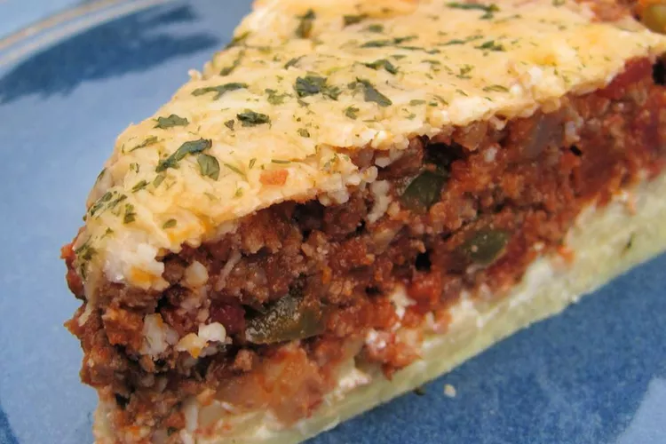

Spaghetti Pie

Description
This spaghetti pie recipe is made with a spaghetti crust and layered with cheeses, meat, and sauce. Mmm!
Ingredients
- 1 tablespoon vegetable oil
- 2 teaspoons salt
- 6 ounces spaghetti
- 2 large eggs
- ⅓ cup grated Parmesan cheese
- 2 tablespoons butter, softened
- 1 cup cottage cheese
- 1 tablespoon vegetable oil
- 1 pound lean ground beef
- 1 onion, chopped
- ¼ cup chopped green bell pepper
- 1 cup chopped tomatoes
- 6 ounces tomato paste
- 1 teaspoon white sugar
- 1 teaspoon dried oregano
- ½ teaspoon salt
- ¼ teaspoon garlic powder
- 2 ounces shredded mozzarella cheese
Steps
-
Preheat the oven to 350 degrees F (175 degrees C). Grease a 10-inch pie plate or springform pan.
-
Bring a large pot of water to a boil. Stir in 1 tablespoon oil and 2 teaspoons salt.
Cook spaghetti in boiling water-oil mixture, stirring occasionally, until tender yet firm to the bite,
about 12 minutes. Drain, then transfer to a large bowl.
-
Mix eggs, Parmesan cheese, and butter into spaghetti until well combined.
Press and shape into the prepared pie plate to form crust. Spread cottage cheese over crust.
-
Heat 1 tablespoon oil in a large skillet over medium-high heat.
Cook and stir beef, onion, and green pepper until beef is thoroughly browned and crumbly, 5 to 7 minutes.
Mix in tomatoes, tomato paste, sugar, oregano, 1/2 teaspoon salt, and garlic powder until combined.
Spread mixture over cottage cheese.
-
Bake uncovered in the preheated oven for 30 minutes.
Sprinkle with mozzarella cheese and continue baking until cheese is bubbly and beginning to brown, 5 to 10 minutes more.